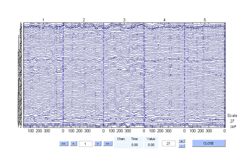

plotWindowData
plots the decoded windows from labelWindows
Contents
Syntax
events = plotWindowData(inputData, model, results) events = plotWindowData(inputData, model, results, 'param1', value1, ...)
Description
events = plotWindowData(inputData, model, results) plots the decoded windows (epochs) obtained from labelWindows in a scroll plot GUI. The inputs model and results come from getModel and labelWindows, respectively.
events = plotWindowData(inputData, model, results, 'param1', value1, ...) specifies additional parameters to be used.
The required input arguments are:
| Arguments | Description |
| inputData | Data of either a 3D matrix or an EEGLAB EEG structure containing 3D (windowed/epoched) data. |
| model | The SVM model output from getModel. |
| results | The output from labelWindows |
The optional input arguments are passed as name-value pairs:
| Name | Description |
| 'srate' | Sampling rate of the data |
| 'includeClasses' | Cell array of strings denoting the desired plotting categories or labels (all by default) |
| 'eventList' | An array of structures with a .type and .latency field. Both fields are numeric. The field .latency is represented in frames. |
| 'chanlocs' | An array of structures with a .labels field which is a string label denoting the channel name. |
| 'colors' | Optional; a nEvents x 3 array of custom-defined colors |
The output argument is:
| Argument | Description |
| events | a nWindows x 2 cell array with columns [eventtype] and [certainty] |
Example
Build a training model on epoched data and test the model on the same epoched data. Plot only epochs containing eye blinks and jaw clenches.
load data/training load data/labels model = getModel(training, labels, 1 : 64); results = labelWindows(training, model, labels); events = plotWindowData(training, model, results, 'srate', 256, 'includeClasses', {'Eye Blink', 'Jaw Clench'})
events =
'None' [0.9591]
'None' [0.9426]
'None' [0.8901]
'None' [0.9022]
'None' [0.7537]
'None' [0.9689]
'None' [0.9712]
'None' [0.9129]
'None' [0.9315]
'None' [0.9680]
'None' [0.9323]
'None' [0.9836]
'None' [0.9556]
'None' [0.9656]
'None' [0.9570]
'None' [0.8566]
'None' [0.9607]
'None' [0.9329]
'None' [0.9700]
'None' [0.4836]
'Jaw Clench' [0.9554]
'Jaw Clench' [0.9723]
'Jaw Clench' [0.9518]
'Jaw Clench' [0.9457]
'Jaw Clench' [0.9451]
'Jaw Clench' [0.9607]
'Jaw Clench' [0.9655]
'Jaw Clench' [0.9752]
'Jaw Clench' [0.9627]
'Jaw Clench' [0.9795]
'Jaw Clench' [0.9048]
'Jaw Clench' [0.9280]
'Jaw Clench' [0.9093]
'Jaw Clench' [0.9025]
'Jaw Clench' [0.9067]
'Jaw Clench' [0.8824]
'Jaw Clench' [0.9038]
'Jaw Clench' [0.9641]
'Jaw Clench' [0.8308]
'Jaw Clench' [0.7881]
'Jaw Movement' [0.8738]
'Jaw Movement' [0.9502]
'Jaw Movement' [0.8596]
'Jaw Movement' [0.9777]
'Jaw Movement' [0.9719]
'Jaw Movement' [0.9389]
'Jaw Movement' [0.9571]
'Jaw Movement' [0.9503]
'Jaw Movement' [0.8952]
'Jaw Movement' [0.9694]
'Jaw Movement' [0.9501]
'Jaw Movement' [0.9531]
'Jaw Movement' [0.1885]
'Jaw Movement' [0.9672]
'Jaw Movement' [0.2931]
'Jaw Movement' [0.9297]
'Jaw Movement' [0.9359]
'Jaw Movement' [0.9584]
'Jaw Movement' [0.9380]
'Jaw Movement' [0.9391]
'Eye Blink' [0.8445]
'Eye Blink' [0.9233]
'Eye Blink' [0.9860]
'Eye Blink' [0.9350]
'Eye Blink' [0.9018]
'Eye Blink' [0.9345]
'Eye Blink' [0.9727]
'Eye Blink' [0.9738]
'Eye Blink' [0.9852]
'Eye Blink' [0.9736]
'Eye Blink' [0.5206]
'Eye Blink' [0.9640]
'Eye Blink' [0.9410]
'Eye Blink' [0.9470]
'Eye Blink' [0.9845]
'Eye Blink' [0.9733]
'Eye Blink' [0.9863]
'Eye Blink' [0.9772]
'Eye Blink' [0.9232]
'Eye Blink' [0.9297]
'Eye Left Movement' [0.9014]
'Eye Left Movement' [0.9610]
'Eye Left Movement' [0.9654]
'Eye Left Movement' [0.9365]
'Eye Left Movement' [0.9109]
'Eye Left Movement' [0.7979]
'Eye Left Movement' [0.8831]
'Eye Left Movement' [0.9760]
'Eye Left Movement' [0.9171]
'Eye Left Movement' [0.9450]
'Eye Left Movement' [0.8768]
'Eye Left Movement' [0.9382]
'Eye Left Movement' [0.8759]
'Eye Left Movement' [0.9544]
'Eye Left Movement' [0.9489]
'Eye Left Movement' [0.9466]
'Eye Left Movement' [0.9158]
'Eye Left Movement' [0.9405]
'Eye Left Movement' [0.9587]
'Eye Left Movement' [0.9086]
'Eye Up Movement' [0.9327]
'Eye Up Movement' [0.7729]
'Eye Up Movement' [0.7706]
'Eye Up Movement' [0.6293]
'Eye Up Movement' [0.9683]
'Eye Up Movement' [0.2174]
'Eye Up Movement' [0.9506]
'Eye Up Movement' [0.9549]
'Eye Up Movement' [0.9567]
'Eye Up Movement' [0.9347]
'Eye Up Movement' [0.9272]
'Eye Up Movement' [0.9725]
'Eye Up Movement' [0.9629]
'Eye Up Movement' [0.9300]
'Eye Up Movement' [0.9433]
'Eye Up Movement' [0.9287]
'Eye Up Movement' [0.9041]
'Eye Up Movement' [0.9535]
'Eye Up Movement' [0.9195]
'Eye Up Movement' [0.9593]
'Eyebrow Movement' [0.9131]
'Eyebrow Movement' [0.9399]
'Eyebrow Movement' [0.9388]
'Eyebrow Movement' [0.9542]
'Eyebrow Movement' [0.9405]
'Eyebrow Movement' [0.9663]
'Eyebrow Movement' [0.9604]
'Eyebrow Movement' [0.9500]
'Eyebrow Movement' [0.9530]
'Eyebrow Movement' [0.9548]
'Eyebrow Movement' [0.9666]
'Eyebrow Movement' [0.9511]
'Eyebrow Movement' [0.9441]
'Eyebrow Movement' [0.8951]
'Eyebrow Movement' [0.9312]
'Eyebrow Movement' [0.9237]
'Eyebrow Movement' [0.9387]
'Eyebrow Movement' [0.9370]
'Eyebrow Movement' [0.9403]
'Eyebrow Movement' [0.9372]
 Copyright 2011-2013 Vernon Lawhern and Kay A. Robbins, University of Texas at San Antonio